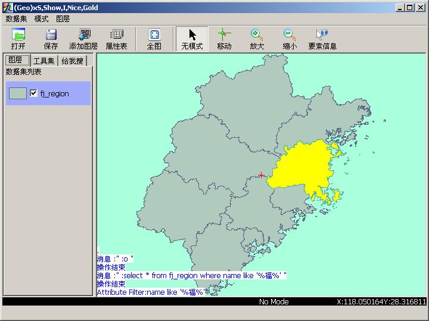
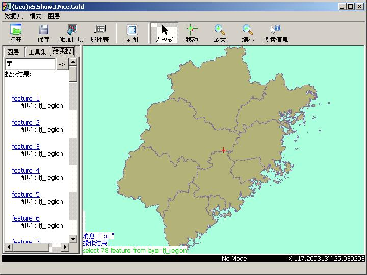

搜索是GIS的最主要的用途。九形提供了强大的搜索功能(先吹一下)。有两种搜索可以选用，一种是输入SQL语句搜索，一种是输入关键字进行搜索。SQL查询方式是类似其他GIS软件那样的，通过SQL语句直接在数据库中查找。另一种类似Google，直接输入关键字，然后搜索出要找的内容。
搜索SQL语句，首先你需要对SQL语句比较熟悉。而且只能用select语句。格式像这样：
select * from layername where ...
暂时只支持select *，还不支持关系表投影操作。当然，where可以随便写。比如在福建的数据中找名字中带“福”字的地区，可以这样写：
:select * from fj_region where name like '%福%'
运行结果:
结果会以黄色高亮标出。当然，如果你的底色就是黄色，当然高亮不喜欢用黄色。这时你可以设置高亮颜色，方法是：设置GSSCONF里的HL_COLOR键值，修改方法可以参考这个。
另外，还有一个问题－－编码问题。在不同系统下，数据中的中文编码会有不同。比如在Windows下做的数据默认中文编码都是GBK系列。如果你不特意搞成UTF8，它就是GBK。而在大多类Unix系统下，中文编码都是UTF8。而在Windows下做的数据在类Unix系统下，中文因为编码不同，显示必定乱码。这个问题就很棘手。如果你在Linux系统下看一个Windows下进行搜索数据，Select语句可能没有写错，但是你搜索就是空，因为编码不同，在搜索时就没办法搜出相同字符串（电脑在这个问题上是很傻的）。所以，我给select的*加了个编码限制。让你可以指定编码搜索。在搜索的时候，会自动转换编码进行搜索。如果指定编码和数据编码一致，SQL语句没有错，就有可能搜索出东西来。指定编码的办法是在*的外面加编码和括号，比如数据是GBK编码的，可以这样指定：
:select gbk(*) from fj_region where name like '%福%'
这样，在utf8的locale的系统上，也可以搜出gbk的数据。当然这样的操作仅限于中文，英文不用考虑这么多。因为英文的utf8和gbk编码一样。
暂时支持的编码写法有：gbk(*),cp936(*),utf8(*)。
当然，在很多时候，使用的人们不懂SQL。或者觉得输入SQL太恶心（我也这么觉得），那好吧，自从google诞生后，大家都懒了。既然有这么多懒人，我们不得不用准备点懒人的大餐。请看，当当当当……
在左边的操作栏，有一个标签，写着“给我搜”。那个就是做模糊关键字搜索的地方。点击标签，就会切换到搜索面版。在输入框中输入要搜索的字符，然后点旁边的按钮。属性中包含输入字符的搜索结果就会出现在下面的面版中。现在面版中可以看的信息不多。只有一个链接，和图层名，点击链接，可以高亮闪烁指使对应要素。
需要说明的是，在用关键字搜索的时候，不需要区别编码。因为后台为你自动转换了编码。在搜索的时候，已经全部包含进去了。所以不管你的数据和你的系统locale编码相不相同，只要属性中包含和输入字符相同的文字，都会被搜索出来（所以我们更鼓励您使用这个功能而不是训练自己的SQL水平，除非你有更复杂的应用）。
我也把这个功能绑定到了search命令上去了。你可以这样输入：
:search 宁
也可以达到同样的效果。结果也在“给我搜”面版中。
| geosings, 搜索 | 返回主目录 |